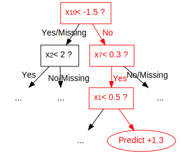
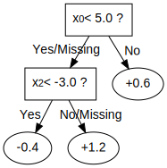
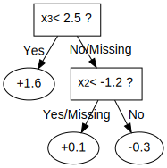

The decision tree is a powerful tool to discover interaction among independent variables (features). Variables that appear together in a traversal path are interacting with one another, since the condition of a child node is predicated on the condition of the parent node. For example, the highlighted red path in the diagram below contains three variables: \(x_1\), \(x_7\), and \(x_{10}\), so the highlighted prediction (at the highlighted leaf node) is the product of interaction between \(x_1\), \(x_7\), and \(x_{10}\).

When the tree depth is larger than one, many variables interact on the sole basis of minimizing training loss, and the resulting decision tree may capture a spurious relationship (noise) rather than a legitimate relationship that generalizes across different datasets. Feature interaction constraints allow users to decide which variables are allowed to interact and which are not.
Potential benefits include:
Better predictive performance from focusing on interactions that work – whether through domain specific knowledge or algorithms that rank interactions
Less noise in predictions; better generalization
More control to the user on what the model can fit. For example, the user may want to exclude some interactions even if they perform well due to regulatory constraints
Feature interaction constraints are expressed in terms of groups of variables
that are allowed to interact. For example, the constraint
[0, 1] indicates that variables \(x_0\) and \(x_1\) are allowed to
interact with each other but with no other variable. Similarly, [2, 3, 4]
indicates that \(x_2\), \(x_3\), and \(x_4\) are allowed to
interact with one another but with no other variable. A set of feature
interaction constraints is expressed as a nested list, e.g.
[[0, 1], [2, 3, 4]], where each inner list is a group of indices of features
that are allowed to interact with each other.
In the following diagram, the left decision tree is in violation of the first
constraint ([0, 1]), whereas the right decision tree complies with both the
first and second constraints ([0, 1], [2, 3, 4]).
 
It is very simple to enforce feature interaction constraints in XGBoost. Here we will give an example using Python, but the same general idea generalizes to other platforms.
Suppose the following code fits your model without feature interaction constraints:
model_no_constraints = xgb.train(params, dtrain,
num_boost_round = 1000, evals = evallist,
early_stopping_rounds = 10)
Then fitting with feature interaction constraints only requires adding a single parameter:
params_constrained = params.copy()
# Use nested list to define feature interaction constraints
params_constrained['interaction_constraints'] = '[[0, 2], [1, 3, 4], [5, 6]]'
# Features 0 and 2 are allowed to interact with each other but with no other feature
# Features 1, 3, 4 are allowed to interact with one another but with no other feature
# Features 5 and 6 are allowed to interact with each other but with no other feature
model_with_constraints = xgb.train(params_constrained, dtrain,
num_boost_round = 1000, evals = evallist,
early_stopping_rounds = 10)
Choice of tree construction algorithm. To use feature interaction constraints, be sure
to set the tree_method parameter to one of the following: exact, hist or
gpu_hist. Support for gpu_hist is added after (excluding) version 0.90.
The intuition behind interaction constraint is simple. User have prior knowledge about
relations between different features, and encode it as constraints during model
construction. But there are also some subtleties around specifying constraints. Take
constraint [[1, 2], [2, 3, 4]] as an example, the second feature appears in two
different interaction sets [1, 2] and [2, 3, 4], so the union set of features
allowed to interact with 2 is {1, 3, 4}. In following diagram, root splits at
feature 2. because all its descendants should be able to interact with it, so at the
second layer all 4 features are legitimate split candidates for further splitting,
disregarding specified constraint sets.
{1, 2, 3, 4} represents the sets of legitimate split features.¶
This has lead to some interesting implications of feature interaction constraints. Take
[[0, 1], [0, 1, 2], [1, 2]] as another example. Assuming we have only 3 available
features in our training datasets for presentation purpose, careful readers might have
found out that the above constraint is same with [0, 1, 2]. Since no matter which
feature is chosen for split in root node, all its descendants have to include every
feature as legitimate split candidates to avoid violating interaction constraints.
For one last example, we use [[0, 1], [1, 3, 4]] and choose feature 0 as split for
root node. At the second layer of built tree, 1 is the only legitimate split
candidate except for 0 itself, since they belong to the same constraint set.
Following the grow path of our example tree below, the node at second layer splits at
feature 1. But due to the fact that 1 also belongs to second constraint set [1,
3, 4], at third layer, we need to include all features as candidates to comply with its
ascendants.
{0, 1, 3, 4} represents the sets of legitimate split features.¶